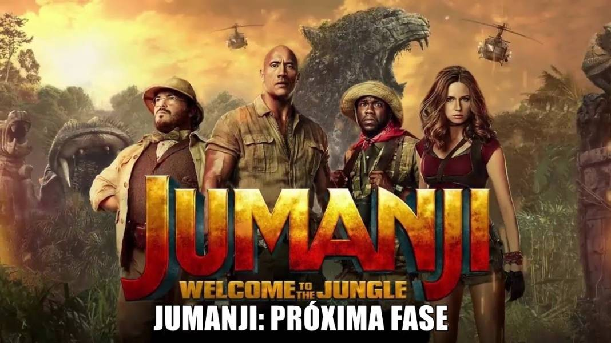
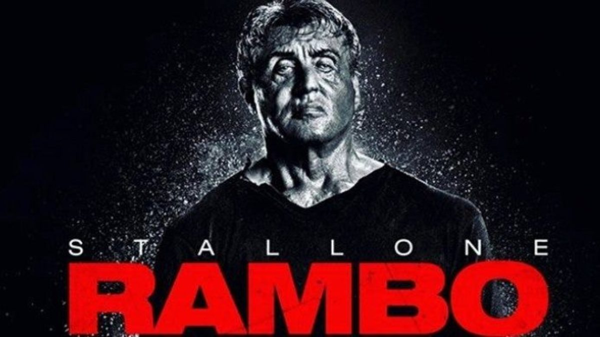
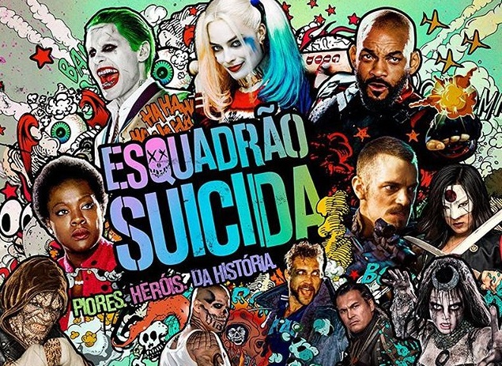

Aqui você encontra filme de qualidade! Abaixo estão listados 5 filmes de ação que se destacam e podem
tornar seu dia melhor.
Jumanji

É um filme estadunidense de 2017, dos gêneros aventura, comédia, ação e fantasia, dirigido por Jake Kasdan,
com
roteiro de Chris McKenna, Erik Sommers, Scott Rosenberg e Jeff Pinkner.
Conta a história de quatro adolescentes que são sugados para dentro de um jogo eletrônico — no filme
anterior
era um jogo de tabuleiro — e sendo forçados a assumir seus personagens numa partida cheia de perigos
mortais.
Velozes e Furiosos 9
Dominic Toretto e Letty vivem uma vida pacata ao lado do filho. Mas eles logo são ameaçados pelo passado de
Dom: seu irmão desaparecido Jakob, que retorna e está trabalhando ao lado de Cipher. Cabe a Dom reunir a
equipe novamente para enfrentá-los.
Rambo

Um veterano da Guerra do Vietnã usa todo seu treinamento e agressividade exercitada nos campos de batalha
quando é preso e torturado por policiais.
Mad Max
Após ser capturado por Immortan Joe, um guerreiro das estradas chamado Max (Tom Hardy) se vê no meio de uma
guerra mortal, iniciada pela Imperatriz Furiosa (Charlize Theron) na tentativa de salvar um grupo de
garotas. Também tentanto fugir, Max aceita ajudar Furiosa em sua luta contra Joe e se vê dividido entre mais
uma vez seguir sozinho seu caminho ou ficar com o grupo.
Esquadrão Suicida

O governo dos Estados Unidos ordena o recrutamento dos piores criminosos para uma importante missão, que
visa acabar com uma entidade misteriosa e aparentemente impossível de se derrotar. É justamente isso que o
governo precisa, de bandidos que praticamente não têm nada a perder. Mas será que eles estão dispostos a
arriscarem suas vidas em nome da lei?